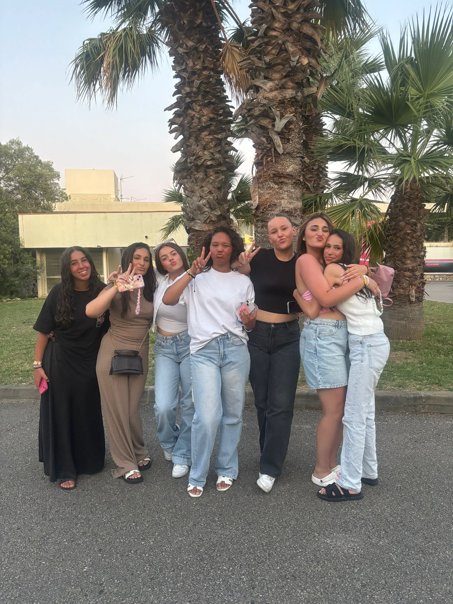
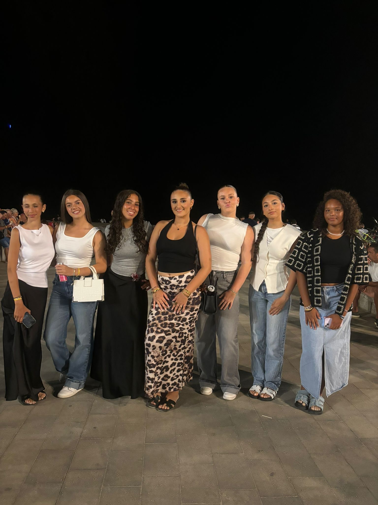
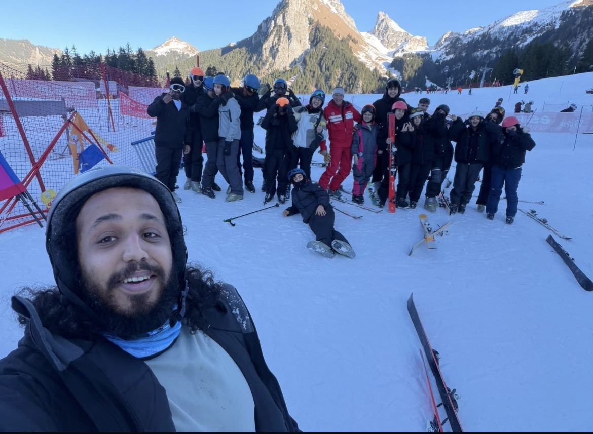
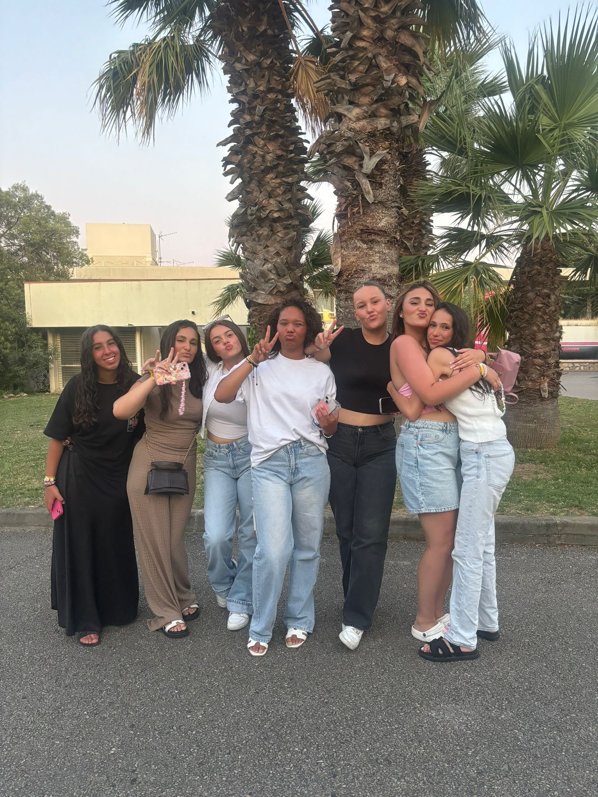
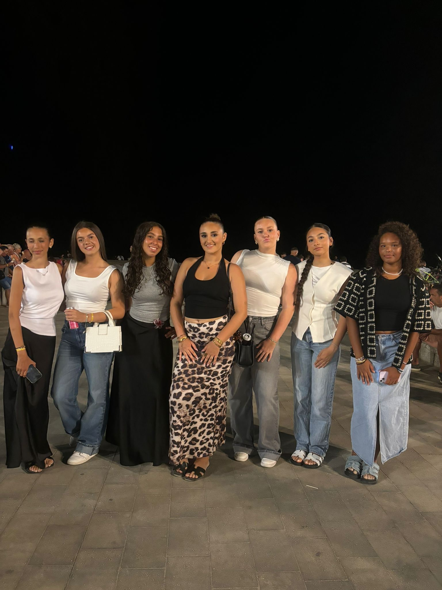
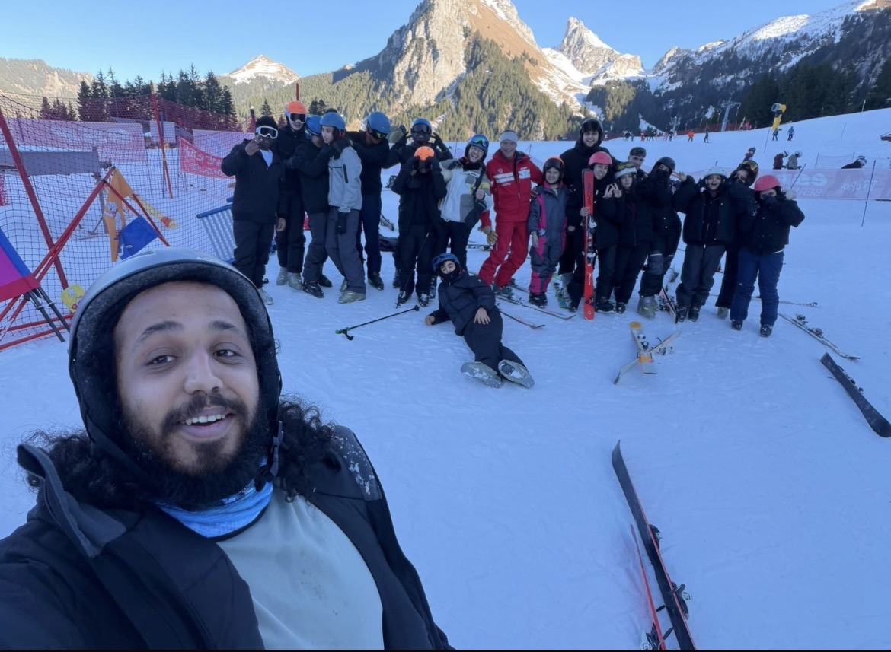

Pourquoi voyager ?
Voyager fait pour moi parti des meilleures sentiments que j’ai pu ressentir J’ai eu la chance de partir plusieurs fois, en colonie ainsi que en famille . Chaque voyage m’a permis de découvrir de nouvelles cultures et de faire de nouvelles rencontres. Ma toute première colonie, je l’ai faite en 2023,en Espagne. C’était la première fois que je partais seule, sans ma famille. Nous avons pris l’avion et nous sommes restés deux semaines. J’ai pu faire de nombreuses connaissances, et nous avons fait de nombreuses activités com du bateau,de la voile,du karting… L’été dernier, je suis repartie en colonie, cette fois à Perpignan,proche de la frontière. C’était encore une expérience trop bien,on était que des filles avec que 2garçons. On sortait le soir, on allait au marché, dans des parcs d’attractions, on faisait plein d’activités. Je me suis fait de nombreuses copines comme Jade et Sarah… En décembre 2025, j’ai fait une autre colonie, mais cette fois au ski. J’y ai passé le Nouvel An 2026. Même si je ne savais pas skier au début, j’ai bien aimé les activités . Nous avons fait beaucoup d’activités . Je me suis encore fait des amis comme Zorah, Mohamed, Yasmine , Anaïs…
En dehors des colonies, j’ai aussi voyagé en famille. Je suis allée plusieurs fois en Algérie, mon pays d’origine. Là-bas, j’ai vraiment pu visiter différentes villes. Il y a aussi trois ou quatre ans, nous sommes partis pendant 2semaines faire presque toute la côte française. Nous avons visité plusieurs villes comme Marseille, Perpignan et Montpellier. Nous sommes aussi allés en Andorre, en Espagne … J’ai également visité Strasbourg l’année dernière le Parlement européen avec ma sœur ce qui était très intéressant.Nous avons eu une visite guidée par la Maire de Strasbourg Mon voyage de rêve serait les Maldives ou Dubai .
Plus tard, j’aimerais faire des voyages humanitaires. Cela me permettrait non seulement de découvrir encore plus sur le monde, mais aussi d’aider des familles et des personnes dans le besoin. Voyager est pour moi une façon de me vider la tête et de faire une pause sur les révisions et l’école.
 




